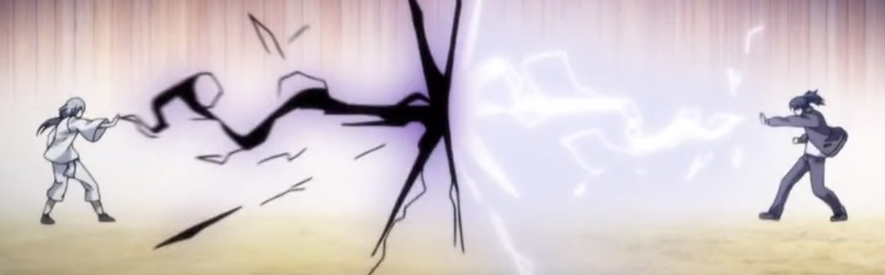
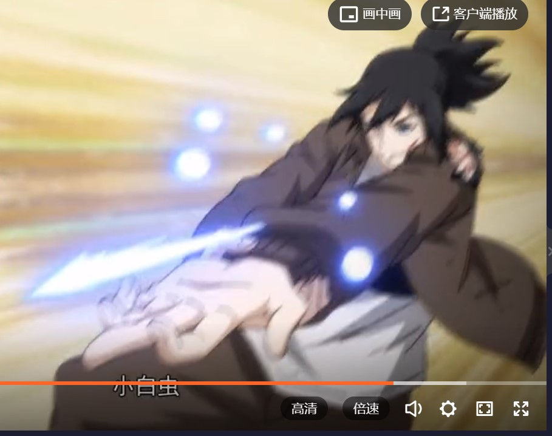
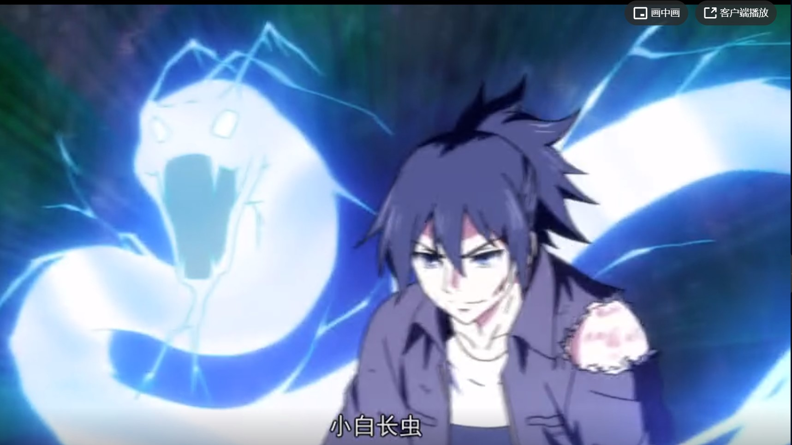
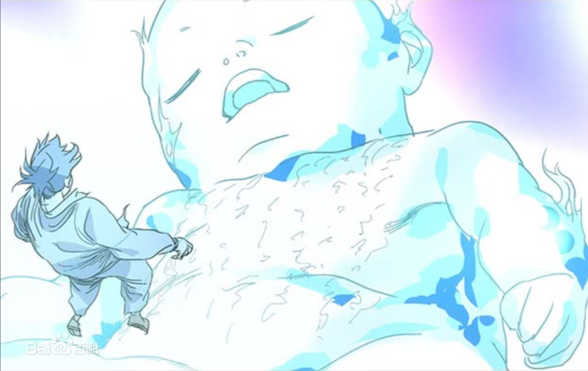

角色能力
金光咒一种将炁凝结成金光的功法，咒语“天地玄宗。万气本根。广修浩劫。 证吾神通。三界内外。惟道独尊。体有金光。覆映吾身。”由张怀义 所传授，目前张楚岚还做不到以炁化形的程度，只能简单的用来防身。 |

|
掌心雷手掌中持续放出白色电弧攻击对手，以灼烧为主，透体之时会夺走对方体内的大量水份。 |
 |
小白虫小白系列，追踪型雷法，张楚岚在观察别人的过程中发现每个人的气味似乎都有微妙的差别， 慢慢的，张楚岚掌握了吞下别人血液在体内分辨这些差别的小技巧。用这些气味做记号， 他可以让小白系列自动攻击这些气味最浓的物体，也就是血液原本的主人。将电弧分解成为 零星的电火花，牺牲了一定的威力但获得了可操作性。 |
 |
小白长虫小白系列，小白虫的加强版，当操纵小白虫的负担慢慢被适应后，张楚岚把分散的电火花重新聚合成一条电弧加以操纵。 |
 |
迅雷/迅雷会员张楚岚继承之后悄悄加以改造，将这白色电弧反逼入体内刺激自己的经脉， 可以让自己的速度和力量在一定时间内获得飞 跃般的提升 |
|
老农功以特殊的方法在下丹田内培养一团独立的炁体，化作一身上刻有文字的炁婴藏于张楚岚体内， 获得了一体两命的能力，是张楚岚的另一个灵魂，当张楚岚遇到生命危险昏厥过去之后便会 取得张楚岚身体的控制权 |
 |